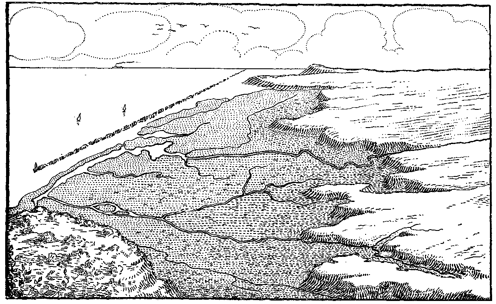
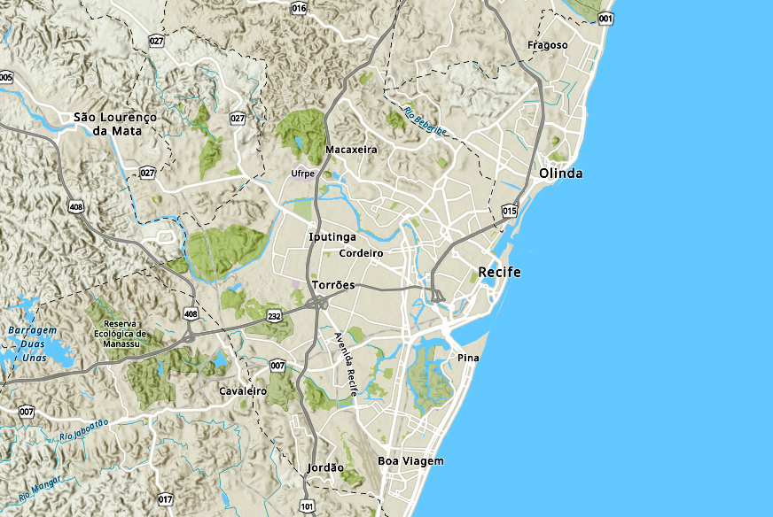
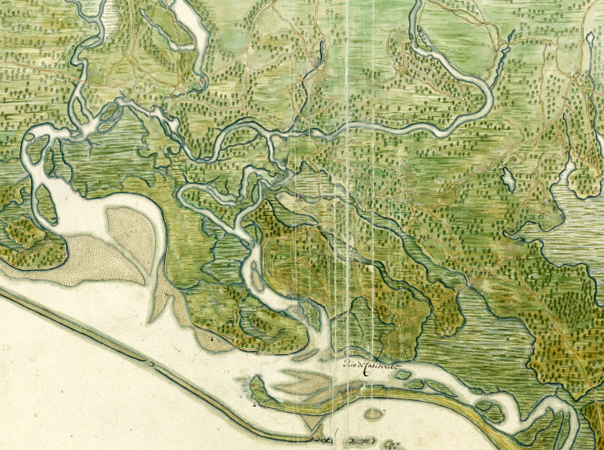
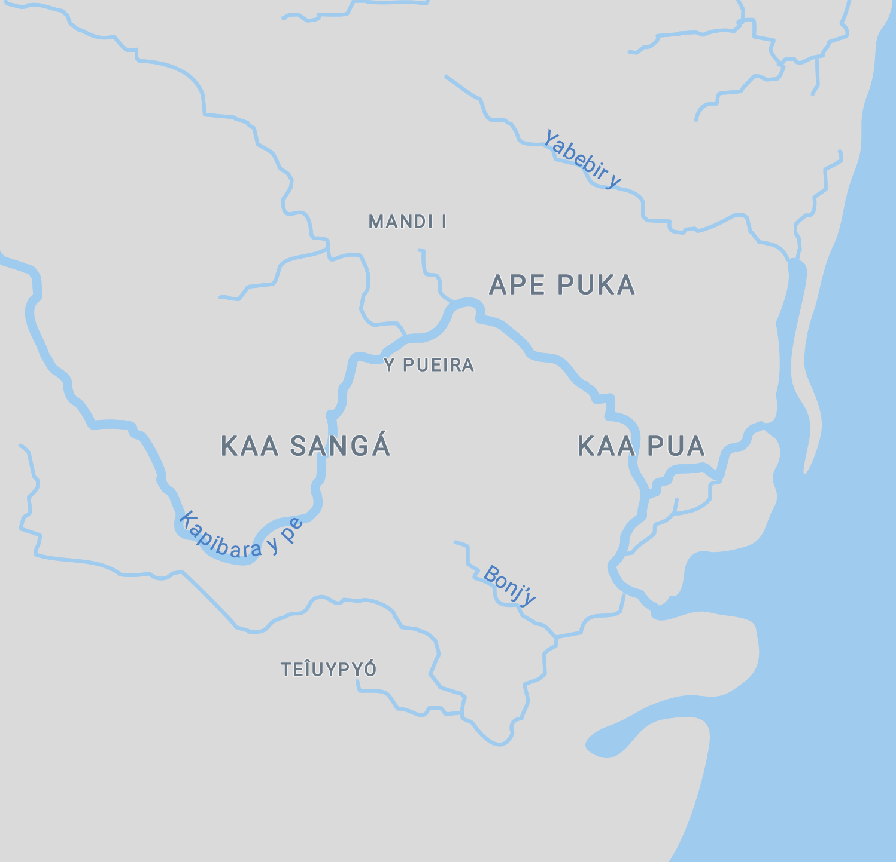
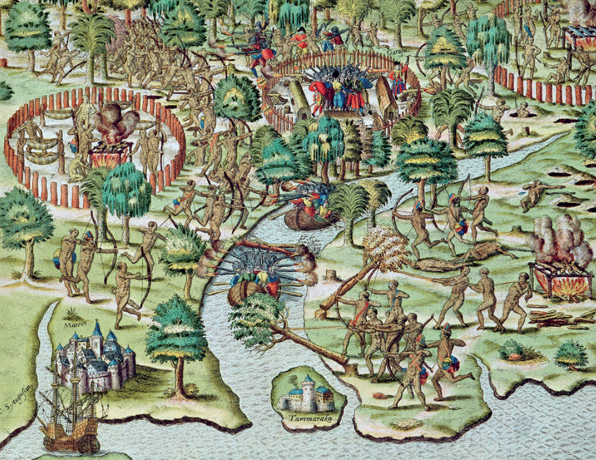

🦀 Várzeas do Capibaribe
Depois de uma pequena introdução de quem seriam as pessoas que em Recife se encontravam antes da chegada dos europeus, vamos dar uma volta rápida na geografia da cidade para entender o que é o Recife em sua natureza.
O Recife nasce da erosão de uma rede de rios em um terreno acidentado. O Capibaribe, com o maior dos deltas, é o determinante na configuração física que a região possui. Ao norte e ao sul do rio se desenham pequenas cordilheiras de morros. O Capibaribe construiu uma planície alagada entre eles, e nos meses de inverno, entre março e agosto, é comum que as águas tomem conta dessas várzeas.
A baía entulhada do Recife
Próxima a sua desembocadura no oceano, o Capibaribe e demais rios abrem uma planície alagada entre os morros que desenham o município do Recife. Nesses alagados se encontram todos os bairros atuais centrais. A maior parte da zona oeste do município se encontra na planície alagada, com excessão das terras mais próximas do limite do município no extremo oeste. Também é assim na zona sul, no limite com Jaboatão dos Guararapes, os morros enfileiram-se e entram no continente. O norte do Recife, cujos limites tocam em vários municípios, é plano apenas nas regiões mais próximas do Capibaribe e da foz do Beberibe, fazendo-se morro no restante.
A atual ocupação recifense...

...e a projeção física tridimensional do mesmo recorte da região
Essa região de várzea dos rios, além de variar diariamente a altura de suas águas por estar muito próxima ao nível do mar, sofre com as intensas chuvas monçônicas. Isto é, há uma estação definida em que se chove muito e é comum que se chova sem parar por um ou mais dias inteiros. Aqui não se aplicam plenamente as regras que definem as estações como nas regiões temperadas da Europa, mas sim um ritmo próprio do que é o verão, outono, inverno e primavera.
Os moradores originais conheciam bem esse ritmo. As atuais denominações dos bairros trazem uma possível pista do que foram as regiões do Recife. Boa parte desses nomes são palavras que derivam do tupi, a língua dos caetés, e podem ilustrar características originais daqueles locais. São hipóteses, uma vez que o contato europeu contaminou, alterou ou extinguiu as dinâmicas nativas.
Em resumo, as localidades recifenses sinalizam características de sua fauna e flora, de suas águas e do propósito daquele lugar.
E se retirássemos as primeiras ocupações europeias no Recife deixando o terreno nu e suas estradas? Recorte e adaptação do mapa de Johannes Vingboons (1664).
Tomando de partida o ponto do Capibaribe que corta a mata densa, a Kaa Sangá ou Caxangá, o rio das capivaras desce em curvas suaves e dá forma em um desses meandros, à sua margem direita, um terreno que “se transforma em rio durante o inverno”, ou seja, se alaga com as chuvas. Os caetés chamam essa formação de Y Pueira, a Iputinga. Do outro lado da margem, à esquerda, há uma bifurcação de um caminho traçado pelo homem, o Ape Puka ou Apipucos. Um caminho indo rente à margem do rio e outro se afastando dele. Diz-se que haveria uma aldeia em Apipucos, por suposto um local muito agradável para se viver devido ao frescor do rio e da vegetação e a segurança contra as águas durante os invernos difíceis. Continuando a descer o rio, continuam os terrenos alagados na margem direita, e na margem esquerda atingiríamos a aldeia de Acajúapáie, banhada por um riacho, o Paraná Mirim, ou Parnamirim. Continuando, ainda na margem esquerda encontramos a “habitação na mata”, a Kaa Pua ou Capunga. Mais adiante, o rio entra uma região de confluencia de outros rios, criando ilhas onde provavelmente se encontravam muitas palmeiras que provavelmente deram nome ao Paissandu. Por fim, se alarga até encontrar o rio empolado, o Yabebir y ou Beberibe, para formar o porto natural de Pernambuco.
Projeção representativa de algumas localidades do Recife nativo
Os morros do Recife sempre tiveram relações com a água. No norte, o Mandu, às margens da lagoa de Apipucos, tem possível origem no Mandi i, uma espécie de bagre comestível. Já nos morros do sul, se encontravam muitos y bura(s), nascentes de água. Há (ou havia) um rio menor conhecido por ser “o rio que faz curva”, o Bonj’y. Um jequiá, ou Jiquiá, é um cesto de pesca.
Encontramos também localidades relacionadas a alimentação, como a maka’sera, a Macaxeira; o Araçá, um fruto comum por aqui; e a guabiroba ou Guabiraba, um fruto amargo comestível. Por fim, também encontramos um lugar que possivelmente se encontravam muitos lagartos tejus, o teîuy-pyó; e outro lugar cuja mata, a mbira ou madeira, deu nome a Imbiribeira.
Apesar de apelidarmos o Recife de Veneza brasileira, não levamos essa ideia muito a sério na prática. Ao menos não como nossos conterrâneos nativos. Nos relatos que descrevem os caetés, um tema comum é o nado e a navegação.
Para passarem estes [os caetés] aquele rio [o São Francisco], que é um dos maiores do Brasil e irem ao outro lado fazer suas entradas pelo território tupinambá, usavam embarcações que faziam de certas palhas compridas, como se fossem tábuas, e que chamam de piripiri. Fazem delas os moradores daquele lugar [o território caeté] esteiras e enxergões para suas camas. Essas tábuas, depois de bem secas ao sol, juntavam em molhos onde dentro encaixavam um varapau do tamanho que fosse necessário. Prendiam bem os molhos com aneis feitos de cipó, que chamam de timbó, curtos e fortes, e depois juntando um molho com outro formavam uma esteira ainda maior, unidas entre si por paus, como chamam de jangadas. E com aquelas embarcações atravessam o rio e iam assaltar os tupinambás do outro lado.*
“O cerco de Igarassu” de Theodore de Bry, publicado em 1557 na obra “Americae Tertia Pars”. A imagem retrata um conflito entre os caetés e portugueses. A pintura é a visão de um europeu do século 16 das populações originais e a forma como essas pessoas foram retratadas, não apenas nessa obra mas em todas as outras representaçãoes nativas, definiu não só as decisões políticas da época, mas também a forma como tratamos nossos ancestrais hoje.
Os caetés, assim como outros povos nativos, possuiam uma forma de vida peculiar que definitivamente não foi compreendida pelos portugueses. Sempre descritos como traiçoeiros, malvados e canibais, no próximo texto vamos mergulhar mais na vida deles e entender suas relações com outros povos, para posteriormente discutirmos suas relações com os europeus.
Gostaria de agradecer o apoio do meu amigo Bruno. Ele tem revisado esses textos, e assim tenho aprendido bastante. Brigado amigoh.